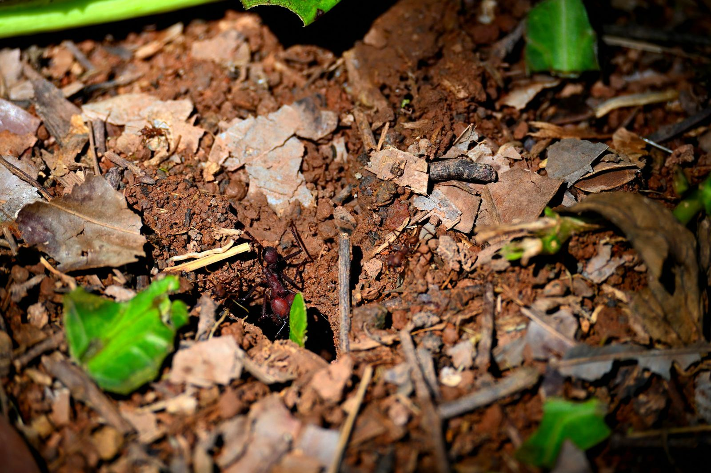

Les fourmis sont apparues il y a environ cent soixante millions d'années. On compte aujourd'hui plus de seize mille espèces décrites, pour une population estimée à vingt millions de milliards d'individus, soit à peu près deux millions et demi par être humain.
Une telle densité ne s'obtient pas sans friction. Le succès des fourmis repose sur une collaboration interne étroite, mais cette collaboration s'exerce contre quelque chose : d'autres colonies, d'autres espèces, d'autres clans. La guerre est le régime permanent de l'histoire des fourmis, pas un accident de parcours.
Les légionnaires : une armée sans ville
Environ deux cents espèces ont renoncé au nid fixe. Les fourmis légionnaires vivent en groupes de plusieurs millions d'individus, constamment en mouvement, et reconstituent chaque soir un bivouac fait de leurs propres corps.
- Des colonnes de cent mètres. Le front de chasse avance en éventail, démembrant tout ce qu'il rencontre : insectes, arachnides, petits vertébrés.
- Jusqu'à 500 000 proies par jour. Une colonie massive peut atteindre ce chiffre en une seule journée d'activité.
- La submersion. Leur force n'est pas individuelle : elles noient guêpes, termites et fourmis rivales sous le nombre, avant même qu'une défense coordonnée puisse s'organiser.
Chez les légionnaires, le nombre ne fait pas partie de la tactique. Il est la tactique.
La trêve entre égaux
Fait contre-intuitif : les colonies de légionnaires ne se font généralement pas la guerre entre elles. Quand deux colonnes se croisent, elles s'ignorent ou s'évitent.
La raison est purement arithmétique. Deux armées de cette puissance qui s'affronteraient s'anéantiraient mutuellement, sans qu'aucune ne puisse exploiter la victoire. L'évitement est le seul comportement que la sélection ait pu conserver.
Comment on survit à une colonne
Face à cette menace, les autres espèces ont développé des réponses très différentes.
- L'évacuation d'urgence. Certaines colonies abandonnent le nid dès la détection des premières éclaireuses légionnaires. Elles emportent le couvain et reconstruisent ailleurs une fois le danger passé. On sacrifie la position, jamais la génération suivante.
- Les bunkers vivants. D'autres espèces disposent d'ouvrières à la tête large et carrée, dont la seule fonction est de se caler dans l'entrée du nid pour la sceller physiquement. La porte est un individu.

La bataille rangée des coupe-feuille
Les fourmis coupe-feuille du genre Atta ne fuient pas. Leurs colonies matures comptent des soldats massifs entièrement dédiés à la protection du nid, et une seule espèce de légionnaires parvient à les attaquer avec succès : Nomamyrmex esenbeckii.
L'affrontement suit un schéma remarquablement structuré. Les coupe-feuille forment une ligne de front où leurs soldats tentent de décapiter les envahisseuses à la mandibule, tandis que les légionnaires cherchent à piquer leurs adversaires à mort. En dernier recours, les coupe-feuille barricadent les chambres internes du nid pour protéger le couvain et le jardin fongique.
Pourquoi ce nid vaut cette bataille
Une colonie de coupe-feuille abrite aussi une culture de champignon vieille de plusieurs années, irremplaçable, dont dépend l'alimentation entière du groupe. Voir l'agriculture symbiotique.
Les super-colonies
Le conflit ne se limite pas à des escarmouches locales. Certaines espèces forment des super-colonies qui s'étendent sur des milliers de kilomètres carrés, et parfois sur plusieurs continents.
Le cas le plus documenté est celui de la fourmi d'Argentine, Linepithema humile. Introduite en Europe, elle y a formé le long du littoral méditerranéen une colonie unique qui s'étire sur plusieurs milliers de kilomètres. Des individus séparés par des centaines de kilomètres se reconnaissent comme apparentés et ne se combattent jamais.
La clé est chimique : ils partagent la même signature d'hydrocarbures cutanés, la même odeur de colonie. Ce qui, normalement, limiterait un clan à quelques mètres carrés devient ici un passeport continental.
Une espèce qui cesse de se faire la guerre en interne peut consacrer toute son énergie à la faire à l'extérieur.
L'effet sur la biodiversité locale est brutal : là où elles s'installent, ces espèces invasives éradiquent les fourmis indigènes, et avec elles les services écologiques qu'elles rendaient. C'est exactement ce qui se produit dans les savanes est-africaines avec la fourmi à grosse tête, décrit dans L'acacia siffleur.
La spirale de la mort
Cette machine de guerre a une faille, et elle est révélatrice de ce qu'est réellement une fourmi.
Quand un groupe d'ouvrières perd la trace de la piste principale, il peut arriver qu'elles se mettent à suivre celle qui est devant, et seulement celle-là. Si le hasard referme la file sur elle-même, un cercle se forme.
Prisonnières de leur propre règle, elles continuent de tourner. Des heures. Parfois sur des cercles de plusieurs centaines de mètres de circonférence. Jusqu'à mourir d'épuisement, les unes après les autres.
Ce que la spirale démontre
Aucune fourmi ne prend jamais de recul sur ce qu'elle fait. Elle n'a pas de représentation de sa trajectoire, donc pas de moyen de constater qu'elle est absurde. La règle « suivre celle de devant » est excellente dans 99,9 % des cas, et fatale dans le dernier. C'est le prix exact de l'intelligence collective : une efficacité redoutable, et zéro capacité de révision.
Ce même mécanisme de renforcement qui permet à une colonie de trouver le plus court chemin est celui qui l'enferme dans le cercle. Le bug et la fonctionnalité sont ici la même chose, vue sous deux angles.
Sources et pistes
- Vulgarisation · Kurzgesagt, « La guerre mondiale des fourmis : les fourmis légionnaires » — point de départ de cet article, pas une source primaire.
- Vulgarisation · TRY, « Ne devenez jamais une fourmi ».
- Travaux sur la super-colonie européenne de Linepithema humile le long du littoral méditerranéen.
- Recherches sur les raids de Nomamyrmex esenbeckii contre les colonies matures d'Atta.
- P. Schultheiss et al., « The abundance, biomass, and distribution of ants on Earth », PNAS, 119 (40), 2022. doi:10.1073/pnas.2201550119